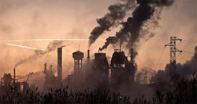
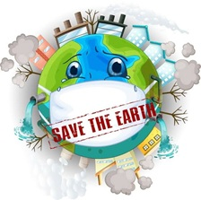

Escasez de agua: El desarrollo desmedido de proyectos turísticos y residenciales pone en riesgo el acceso al agua potable para los habitantes locales.
Peligro minero: Las concesiones mineras a cielo abierto amenazan con contaminar los mantos acuíferos y afectar irreparablemente el Golfo de California.
Áreas protegidas: Es vital la defense del Parque Nacional Bahía de Loreto, un refugio crucial para la vida marina que sufre constante presión comercial.
Resistencia: Los pobladores luchan activamente por un modelo de desarrollo sustentable que respete su entorno y no priorice únicamente el capital extranjero.

Especulación: Las tierras que antes pertenecían a las comunidades están siendo acaparadas por grandes desarrolladores, elevando el costo de vida y desplazando a los habitantes locales.
Deforestación: La tala indiscriminada de selva y vegetación costera rompe el equilibrio ecológico, dejando las costas vulnerables ante huracanes y erosión.
Falta de infraestructura: El crecimiento poblacional derivado del turismo no viene acompañado de plantas de tratamiento de aguas residuales ni gestión de residuos sólidos, terminando toda la contaminación en el mar.
Acción urgente: Diversos colectivos, académicos y organizaciones exigen regulaciones estrictas y la cancelación de megaproyectos que violan las normativas de protección ambiental vigentes.